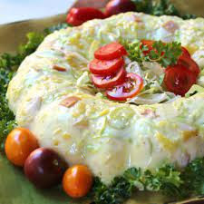

Ham Jello Salad

Ham Jell-O Salad
This savory Jell-O salad is made with cabbage, chopped ham, mayonnaise, and spicy brown mustard.
Ingredients
- 1 (3 ounce) package lemon-flavored gelatin mix (such as Jell-O)
- 1 cup boiling water
- 1 (8 ounce) can crushed pineapple in juice, drained and juice reserved
- 1 1/2 tablespoons white wine vinegar
- 1/2 cup cold water, or as needed
- 1/2 cup mayonnaise
- 2 teaspoons spicy brown mustard, or to taste
- 1 cup finely chopped cabbage
- 1/2 cup chopped celery
- 1 cup chopped cooked ham
Directions
- Dissolve lemon gelatin in boiling water in a large bowl. Pour reserved pineapple juice and white wine vinegar into a measuring cup; add enough cold water to measure 1 cup. Stir water-juice mixture into gelatin mixture; refrigerate until cold and beginning to set, about 30 minutes.
- Stir mayonnaise and spicy brown mustard together in a bowl; whisk mayonnaise mixture into cooled lemon gelatin mixture until smooth. Gently fold cabbage, ham, celery, and reserved pineapple into gelatin. Transfer mixture into a ring-shaped gelatin mold.
- Chill in the refrigerator until firmly set, about 4 hours.
- To serve, dip the gelatin mold into hot water to loosen the sides; place a plate on top of the mold, invert, and gently lift the mold from salad.
All instructions for this recipe were sourced from this page, by Kelly "The Scarecrow" Kolb.